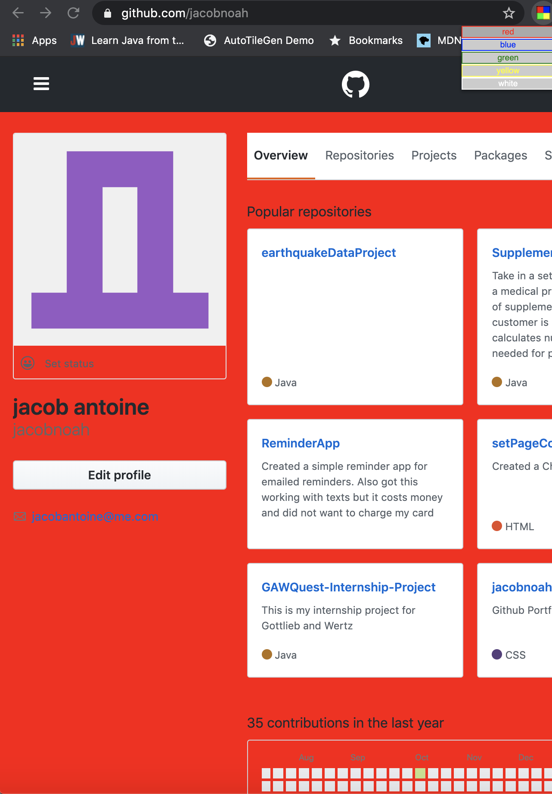

Chrome Web Page Color Extension

I decided I wanted to learn how to make Chrome Web Extensions since there are quite a few that I use on a daily basis. This app may be simple but it can be really cool to altar the appearance of a Web page and I also added white to change back to normal. The color options for the Chrome Web Page Color Change Extension are as follows: red, blue, green, yellow, white.
View Code